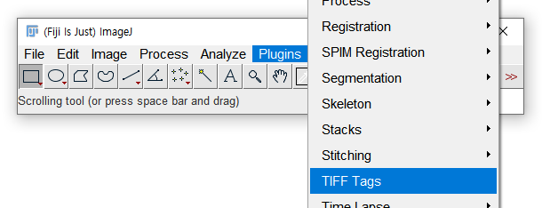

- 여러분이 다룰 Image File의 구조를 간략하게 살펴보겠습니다.
- 최대한 간결하게 필수적인 지식만 전달하고자 합니다.
Reference
A Fiji Scripting Tutorial #2. Your first Fiji script
2.1. Image File 구조
ImageJ로 다룰 image는bitmap형식입니다.전체 이미지는
pixel이라 불리는 점의 집합으로 이루어져 있습니다.원점은 좌측 상단이며 아래 이미지는 256x256개의 pixel을 가지고 있습니다.
이미지 파일에는
Channels,Slices,Frames속성이 있습니다.Channel: 하나의pixel을 몇 가지의 데이터로 표현하는지.Slices: 입체적인 시료를 몇 개의 층으로 나누어 분석했는지.Frames: 몇 장의 연속된 이미지를 합쳤는지.
2.2. ImageJ에서 Image File 읽기.
ImageJ에서는 다른 프로그램처럼[File] > [Open]을 통해서 이미지 파일을 열 수 있습니다.- 각자 파일은 조금 나중에 열어보기로 하고, 여기서는 동일한 설명을 위해 같은 파일을 열어보겠습니다.
ImageJ에서 제공하는 Sample Image를 다음과 같이 열 수 있습니다.[File] > [Open Samples]로 가면 다양한 그림들이 있는데, 여기서Boats (356K)를 선택합시다.
2.3. Image File 정보 읽기.
- Image File에 담긴 정보를 읽는 방법을 알아봅시다.
가로세로 몇 개의pixel로 구성되어 있는지,Greyscale은 몇 단계로 구성되어 있는지 등입니다.
2.3.1. GUI
아래 왼쪽과 같이 흑백 배 사진을 보실 수 있습니다.
사진 왼쪽 위를 자세히 보시면
720x576 pixels; 8-bit, 405K라는 정보가 나와 있습니다만 조금 더 자세히 알아봅시다.[Image] > [Show Info]를 클릭하시면 이미지의 전체적인 정보를 보실 수 있습니다.이미지 창에서
Ctrl + I단축키를 입력하셔도 됩니다.
그럼, 아래와 같은 Image File의 정보가 요약된 창이 뜹니다.
Title은 파일명,Width은 이미지의 폭,Height는 이미지의 높이,Size는 파일 크기를 말하며,Bits per pixel과Display range는 한pixel이 담을 수 있는 데이터의 크기를 말합니다.n bit는 $ 2^{n} $개의 정보를 담을 수 있으므로, 8 bit는 한
pixel의 데이터를 $ 2^{8} = 256 $ 단계로 표현할 수 있습니다.
따라서Display range는 0(black)-255(white)까지의 값을 가질 수 있습니다.Channels,Slices,Frames속성은[Image] > [Properties...]에서 다음과 같이 확인 가능합니다.
다른 예제를 통해 복잡한 이미지의 기본 정보를 살펴봅시다.
[File] > [Open Samples]에서mitosis.tif를 선택합니다.
2channel, 5slice, 51frames를 가진 171 x 196 image 입니다.
Image Info: 파일명, 이미지 크기,Bits per pixel,Frame관련 정보입니다.
Image Properties...:Channels,Slices,Frames정보입니다.
2.3.2. ImageJ Python Script.
우리의 목적은
pythonscript를 이용해서 이미지를 처리하는 것입니다.python명령어를 이용해서 이미지에 드러난 형상과pixel데이터를 처리하는 연습을 해 보겠습니다.다시
Boats를 화면에 띄우고 script 창을 열어봅시다.[File] > [New] > [Script..]를 클릭하면 됩니다.
단축키
[를 누르면 한 번에 아래와 같은 창을 띄울 수 있습니다.ImageJ는 상당히 많은 언어를 제공합니다. [상세링크]
우리는python을 이용한 스크립트를 작성할 것이므로 이 중에서python을 선택합시다.
엄밀히 말하면,
ImageJ에서 지원하는 것은Python이 아니라Jython입니다.Jython은JAVA플랫폼에서Python을 구현한 것으로,JAVAclass를 불러올 수 있습니다. [Link]JAVA기능을 활용해 UI를 제작할 수 있습니다.
이미지 분석 및 조작 부분은python의 문법을 따릅니다. [Link]script 창에 아래와 같은 명령을 입력하고 실행해 봅시다.
실행 단축키는Ctrl + R입니다.
2.3.3. ImageJ Python Script 설명.
package
ij로부터IJ를 불러옵니다.1
from ij import IJ
imagej가 제공하는 packageij안에는IJ외에도 다양한class가 있습니다. [Link]
이 중 지금 우리가 호출할 명령어는IJ안에만 있으므로 다른 것들은 두고IJ만 불러오는 것입니다.
현재 열려 있는 그림을 잡아옵니다.
1
imp = IJ.getImage()
IJ.getImage()는 열려 있거나 마우스가 최근에 클릭한 이미지를 데이터로 메모리에 담는 명령입니다.imp =이 앞에 있으므로, 지금 열린Boat이미지를 통째로imp라는 변수에 넣겠다는 뜻입니다.- 이제
imp에서 읽는 정보는Boat이미지의 정보이고,imp를 수정하면Boat이미지가 수정됩니다.
그림의 정보를 출력합니다.
1
print imp
python의print명령은 뒤에 오는 변수의 내용물을 출력하라는 뜻입니다.
예를 들어a = 1이라고 선언한 뒤에print a를 하면a에 담긴1을 출력합니다.- 여기서는
imp에 담긴 내용을 출력하라는 명령이므로 아래 창에 출력된 것 처럼img["boats.gif" (-5), 8-bit, 720x576x1x1x1]이라는 결과물이 나옵니다.img: “image data이고, 상세 정보는 []와 같음”."boats.gif": 파일명(-5): ID8-bit:pixel의 data level ($ 2^{8} = 256 $)720x576:widthxheight- 첫번째
x1:channels - 두번째
x1:slices - 세번째
x1:frames
width,height,channels,slices,frames는 이미지 데이터에 접근하는 주소가 됩니다.
2.4. Image Meta Data 읽기.
- Image Data가 Image가 어떻게 구성되어 있는지에 대한 정보라면,
Image Meta Data는 Image가 어떻게 형성되어 있는지에 대한 정보입니다. SEM이나TEM같은 현미경 사진 분석에 중요한 nm/pixel, 논문 작성시 필요한 가속전압 등이 있습니다.
2.4.1. TEM Image (.dm3)
ImageJ에서는Gatan Digital Micrograph의dm3format을 지원합니다.- 별도의 옵션이나 설치 없이
[File] > [Open]을 통해dm3파일을 열 수 있고,Show Info를 하면 다음과 같은 meta data 전체를 볼 수 있습니다. Resolution,Pixel size,Voltage,Magnification등의 정보가 보입니다.
2.4.2. SEM Image (.tif)
ImageJ에서.tif파일을 연 후,Show Info를 하면Resolution과Pixel Size정도만 보입니다.
ImageJ에서tif의 meta data 전체를 보기 위해서는 별도의 플러그인을 설치해야 합니다.다운로드 링크에서
tiff_tags.jar를 다운받은 후ImageJ를 재시작합니다.그리고
[Plugins] > [TIFF Tags]를 선택하면 파일 열기 창이 뜨는데, 여기에서 파일을 선택합니다.

그리고 작은 창에서 한 줄에 몇 글자를 보여줄 지를 선택하면,
아래와 같은 창이 뜨는데, 모든 중요 정보가 한 줄로 나타나서 별로 유용하지 않아 사용을 권하지 않습니다.